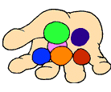
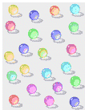
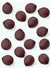
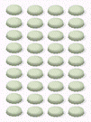

Comments?  . . | Back to  | Go back to Home Page | Go back to Contents |
Money Swap |
Version #1
Alfredo and his little sister, Betti, recently came into some money. Fifty-five dollars in total. However, Alfredo received the lion's share, so to speak. And as he loved his sister a lot - hey, there's nothing wrong with a fellow sticking by his sister! - he felt bad about that.So he said to her, "I'll give you some of my money, in fact, enough so that you'll have double of what you received." Then he fulfilled his word.
However, after counting up her new total, Betti exclaimed, "Dear me! Now I'm even richer than you were to start with. I will give you back enough dollars so that your current amount is doubled." And so she did.
"Hmm...," said Alfredo. "We're a bit more even now than at the start, but I'm not quite satisfied yet. I'll give enough back to you so that you'll double your current amount as well."
The transaction was carried out. But then Betti shouted even louder than before, "This isn't working out at all! I'm now richer than either of us anytime before. I must double your amount once more."
They carefully split the money up one more time. Since they now had nearly the same amount (Betti had but $3 more than her brother), they decided to call it "quits" and go shoot some hoops in the driveway outside their home.
How much money did each of these kids have at the start of this little charade?
Version #2 [Swapping Stones]
Long ago, when mankind lived in caves, there lived 2 boys, named Xerki and Yurkle. They often spent their time playing with the shiny stones they found in the river near their home. They would collect them and count them over and over. One might say they were the world's first math students.One day, as they were playing, they noticed that Xerki had several more stones in his pile than his friend. (Sounds like the inequality x > y, right?) So he gave some stones to Yurkle. Now the number of stones for Yurkle was doubled.
Upon seeing that, as a result, Xerki didn't have so many stones, Yurkle decided to return the favor. He gave back enough stones to double Xerki's current number.
Not to be outdone, Xerki decided to return enough stones to Yurkle, doubling the latter's current quantity.
However, this time it was clear that Yurkle possessed the greater majority of the stones. So they agreed to one final swap of the bright beauties. Though Xerki now had fewer stones than he originally possessed, at least he owned twice as many as he had before this last swap. In fact, he had only 3 fewer stones than his buddy, so they were content with this result.
At the start of this swapping activity, the boys had between 50 and 60 stones in total. How many stones does each boy own now?
  
Version #3
[Change the last paragraph of version #2 to read: "At the start of this swapping activity, Xerki had 36 stones in total. How many stones does Yurkle finally own?]

| Comments? . | Back to | Go back to Home Page | Go back to Contents |